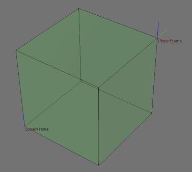

vcVolumeDetector allows you to detect collisions in the 3D world using a box. Collision detection requires at least one node list and a box defined by lower and upper corners.

A collision is detected when nodes in a given list collide with the box. The collision can be tested using geometry or bounding boxes of nodes and limited to the first recorded collision or all collisions.
Contents Hide
| Name | Type | Access | Description |
| Corner1 | vcVector | RW | Defines the lower corner of box in World coordinate system. |
| Corner2 | vcVector | RW | Defines the upper corner of box in World coordinate system. |
| HitCount | Integer | R | Gets the number of detected collisions with box. |
| NodeList | List of 3-tuple (vcNode node, Enumeration inclusion_type, Enumeration inclusion_scope) | RW | Defines a list of one or more nodes that can trigger a collision
with box.
See Collision Detector Constants for more information. |
| TestMethod | Enumeration | RW | Defines test method for detecting collisions.
See Collision Detector Constants for more information. |
| Transformation | vcMatrix | RW | Defines the position matrix of box in World coordinate system. |
| Name | Return Type | Parameters | Description |
| getHitFeature | vcFeature | Integer index | Returns a feature at a given index in detected collisions list. |
| getHitGeometrySet | vcGeometrySet | Integer index | Returns a geometry set at a given index in detected collisions list. |
| getHitNode | vcNode | Integer index | Returns a node at a given index in detected collisions list. |
| testAllCollisions | Boolean | [Real tolerance] | Detects all collisions of box with node list.
An optional tolerance argument can be given to detect collisions within a certain distance. By default, tolerance is zero. If a collision is detected, returns True; otherwise returns False. |
| testOneCollision | Boolean | [Real tolerance] | Detects the first collision of box with node list.
An optional tolerance argument can be given to detect collisions within a certain distance. By default, tolerance is zero. If a collision is detected, returns True; otherwise returns False. |
Example. Test collisions using volume detector
| from vcScript import *
import vcMatrix import vcVector def OnRun(): comp = getComponent() sim = getSimulation() insideDetector = sim.newVolumeDetector() insideDetector.Corner1 = vcVector.new() insideDetector.Corner2 = vcVector.new(102.0, 102.0, 102.0) insideDetector.NodeList = [(comp, VC_NODELIST_INCLUDE, VC_NODELIST_TREE)] insideDetector.TestMethod = VC_INTERSECT insideHit1 = insideDetector.testAllCollisions() insideDetector.TestMethod = VC_CENTER_INSIDE insideHit2 = insideDetector.testAllCollisions() insideDetector.TestMethod = VC_INSIDE insideHit3 = insideDetector.testAllCollisions() print "--------" print insideHit1, "VC_INTERSECT" print insideHit2, "VC_CENTER_INSIDE" print insideHit3, "VC_INSIDE" |